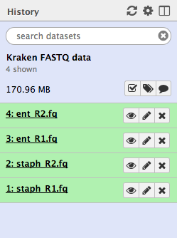
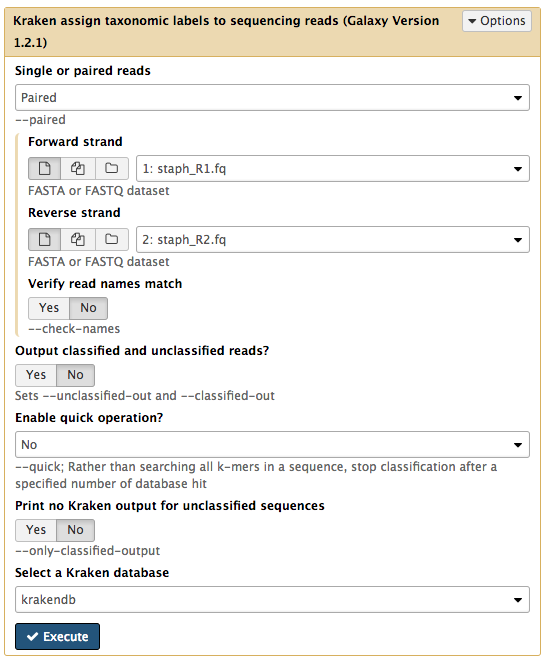
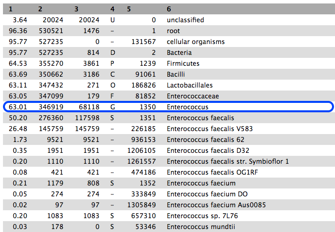
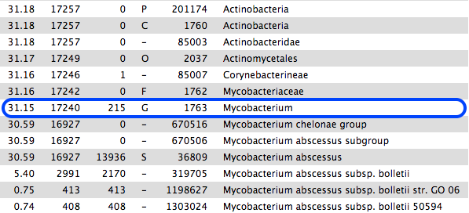

Sample identification with Kraken
To identify a sample from sequencing reads, we can use the tool “Kraken”. This tool can also be used to identify members in a mixed set of reads, for metagenomics.
-
e.g. reads from one sample → Kraken → 95% Staphylococcus aureus.
-
e.g. mixed reads → Kraken → 50% Staphylococcus aureus, 40% Campylobacter concisus, 10% unclassified.
In this tutorial we will use Kraken to confirm the identify of reads from a bacterial isolate.
Get data
In Galaxy, go to
Your current history should now contain four files. If you are using the tutorial independently of a workshop, at this stage you can upload your FASTQ files into the current history.

Run Kraken
We have a sample that should be Staphylococcus aureus. The paired-end FASTQ read files are:
staph_R1.fq andstaph_R2.fq .
(We will look at the other set of files later on in the tutorial).
-
Go to
Tools → NGS Analysis → Metagenomic analyses → Kraken, assign taxonomic labels to sequencing reads -
Set the following parameters:
Single or paired reads : PairedForward strand: staph_R1.fq Reverse strand: staph_R2.fq - leave other settings as they are
-
Your tool interface should look like this:

- Click
Execute
Examine the output
The output is a file called
Click

When the file is green, click on the eye icon to view.
- We will turn this output into something easier to read in the next step.
- Column 2 is the sequence ID.
- Column 3 is the taxon ID (from NCBI).
- Column 5 is a summary of all the taxon IDs that each k-mer in the sequence matched to (taxon ID:number of k-mers).

Kraken report
Go to
-
Set the following parameters:
Kraken output :Kraken on data x and x: Classification Select a Kraken database : krakendb- Click
Execute
The output file is called
- Click on the eye icon to view.
- Column 1: percentage of reads in the clade/taxon in Column 6
- Column 2: number of reads in the clade.
- Column 3: number of reads in the clade but not further classified.
- Column 4: code indicating the rank of the classification: (U)nclassified, (D)omain, (K)ingdom, (P)hylum, (C)lass, (O)rder, (F)amily, (G)enus, (S)pecies).
- Column 5: NCBI taxonomy ID.

Approximately 95% of reads were classified as Staphylococcus aureus, confirming the correct identity of our bacterial sample.
- Of these reads, roughly half were uniquely present in S. aureus subsp. aureus, and most of those were uniquely present in strain HO 5096 0412.
- The sample strain is therefore most related to the HO 5096 0412 strain.
The remaining reads within the S. aureus clade were classified into various taxa.
- Scroll down column 3 to see the number of reads assigned directly to the taxon in column 6.
- These are all very low and can be disregarded.
Next
Re-run Kraken with another sample. This sample should be Enterococcus faecalis.
- Use the files
ent_R1.fq andent_R2.fq . - Run
Kraken with these files. These are paired-end reads. - With the
Classification file from Kraken, runKraken-report . - Cick on the eye icon to view the
Kraken-report file.

-
63% are classified to the genus Enterococcus, and most of these to E. faecalis.
-
However, if we scroll down the table of results, we see that 31% are classified to the genus Mycobacterium, mostly M. abscessus. These are not in the same phylum as Enterococcus.

- This sample is probably contaminated.